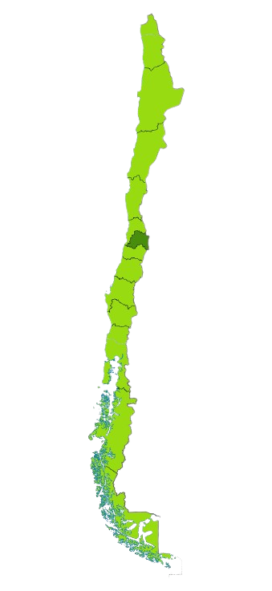

🌱 Nuestra Identidad & Propósito
Del Campo Chileno a la Mesa de tu Hogar
En HuertoHogar acortamos las distancias entre las familias que cultivan la tierra con amor y los hogares que eligen una nutrición consciente, natural y libre de pesticidas sintéticos.
Cosechando Futuro, Dignificando el Trabajo Campesino
HuertoHogar nació del anhelo de rescatar la pureza de los sabores tradicionales de Chile. Observamos cómo las largas cadenas de distribución convencional encarecían los productos, aumentaban el desperdicio y dejaban una mínima ganancia en las manos de quienes madrugan para trabajar la tierra.
Decidimos cambiar ese paradigma creando una red logística transparente y directa. Desde los valles frutícolas de Curicó y Quillota, pasando por los huertos orgánicos de Melipilla, hasta los bosques melíferos de Villarrica y las praderas de Puerto Montt, llevamos alimentos frescos manteniendo intactas sus vitaminas y propiedades nutricionales.
🌿 Nuestro Manifiesto
-
✓
Comercio Justo: Pagamos precios dignos a nuestros productores agrícolas, asegurando su estabilidad y desarrollo.
-
✓
Cero Químicos Dañinos: Solo productos cosechados con abonos naturales, rotación de cultivos y control biológico.
-
✓
Cadena de Frío Garantizada: Camiones climatizados para que frutas y verduras lleguen crocantes y frescas.
-
✓
Embalaje Consciente: Uso de cajas biodegradables y empaques reciclables para proteger el medio ambiente.
Misión, Visión y Políticas de Calidad
Nuestros principios innegociables guían cada decisión, cosecha y entrega en HuertoHogar.
Nuestra Misión
Conectar de manera directa y solidaria a pequeños y medianos agricultores ecológicos con las familias de todo Chile, democratizando el acceso a frutas, verduras, lácteos y alimentos orgánicos de la más alta frescura a precios justos y transparentes.
- Acceso a nutrición viva y saludable
- Impulso a la economía rural chilena
- Reducción del desperdicio alimentario
Nuestra Visión
Consolidarnos al año 2030 como la plataforma comunitaria y tecnológica líder en distribución agroecológica de Chile, siendo el referente nacional en consumo responsable, trazabilidad de origen y sostenibilidad ambiental.
- Cobertura nacional carbono neutral
- Comunidad informada y saludable
- Pioneros en logística circular
Políticas de Calidad
Implementamos estrictos estándares de selección en origen. Cada producto es supervisado desde la siembra hasta la entrega final para garantizar inocuidad, sabor inigualable y máxima durabilidad en el hogar.
- Inspección organoléptica diaria
- Control térmico estricto en bodegas
- Garantía de satisfacción y reposición
Nuestras Nuevas Sucursales en Chile
Puntos de venta, centros de acopio y retiro en tienda estratégicamente ubicados en 7 ciudades clave del país.
📍 Mapa Geográfico de Sucursales
Haz clic en una ciudad o pin
Directorio Completo de Tiendas y Bodegas
Equipo de Desarrollo & Proyecto Duoc UC
El talento multidisciplinario que une tecnología web, diseño y compromiso socioambiental.
💻
Frontend & Experiencia Web
Arquitectura & UI/UXDiseño e implementación de interfaces interactivas, catálogo modular dinámico, vistas responsivas y optimización de experiencia de usuario.
HTML5
CSS3
JavaScript ES6+
📦
Gestión de Inventario & Admin
Logística & BodegasAdministración de productos, control de stock crítico, supervisión de bodegas y coordinación del flujo de compras en el carrito.
LocalStorage API
Inventario
Métricas
🔒
Autenticación & Seguridad
Validaciones & UsuariosMódulos de registro, inicio de sesión seguro, validación estricta de formularios y gestión de credenciales de usuario.
Validación JS
Seguridad Web
Roles
🌱
Agroecología & Calidad
Trazabilidad & AlianzasVínculo permanente con familias campesinas, verificación de normas de calidad orgánica y diseño de la cadena de frío sustentable.
Comercio Justo
Buenas Prácticas
Calidad
¿Listo para disfrutar de alimentos frescos y naturales?
Visita nuestro catálogo en línea y recibe en tu hogar las cosechas más selectas del campo chileno, o encuéntranos en cualquiera de nuestras sucursales.